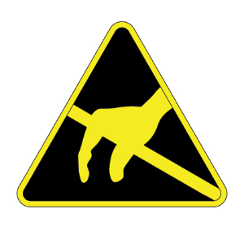

Safety and Precautions¶
Follow these guidelines carefully before using your TRI054S.
Definitions and Symbols¶
Below are some warning, safety, and/or tips icons used in this document.
 The Warning icon indicates a potentially hazardous situation. If not avoided, the situation can result in damage to the product.
The Warning icon indicates a potentially hazardous situation. If not avoided, the situation can result in damage to the product.
 The ESD icon indicates a situation involving electrostatic discharge. If not avoided, the situation can result in damage to the product.
{kind=link}
 The Help icon indicates important instructions and steps to follow.
The Help icon indicates important instructions and steps to follow.
 The Light Bulb icon indicates useful hints for understanding the operation of the camera.
The Light Bulb icon indicates useful hints for understanding the operation of the camera.
 The Computer icon represents useful resources found outside of this documentation.
The Computer icon represents useful resources found outside of this documentation.